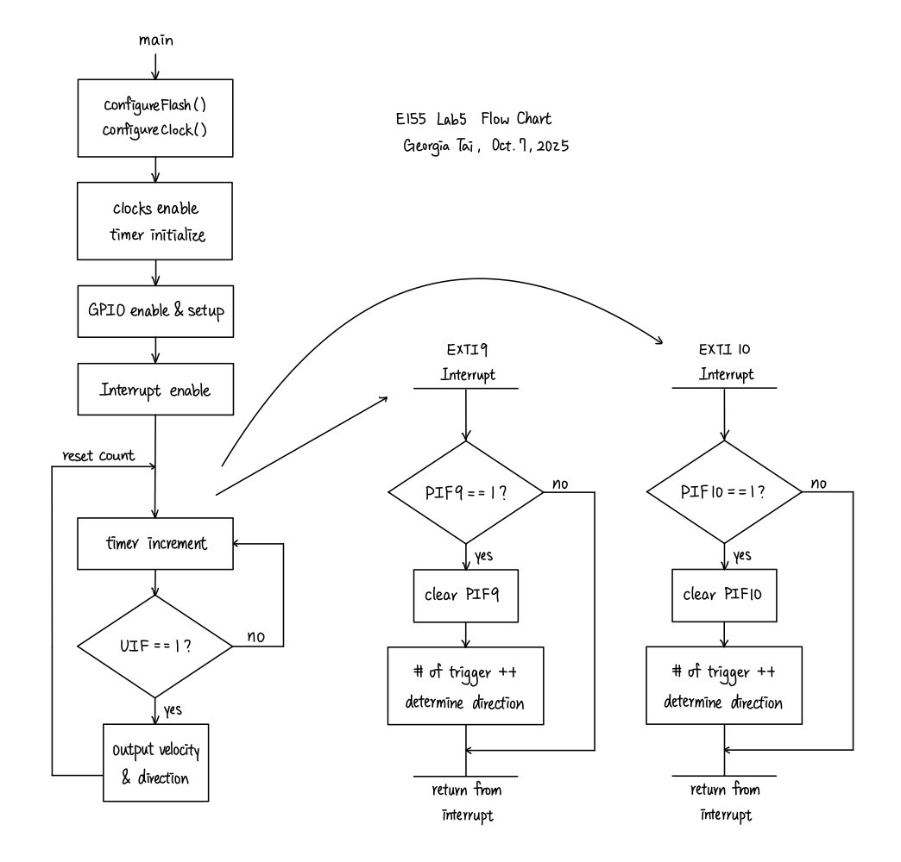
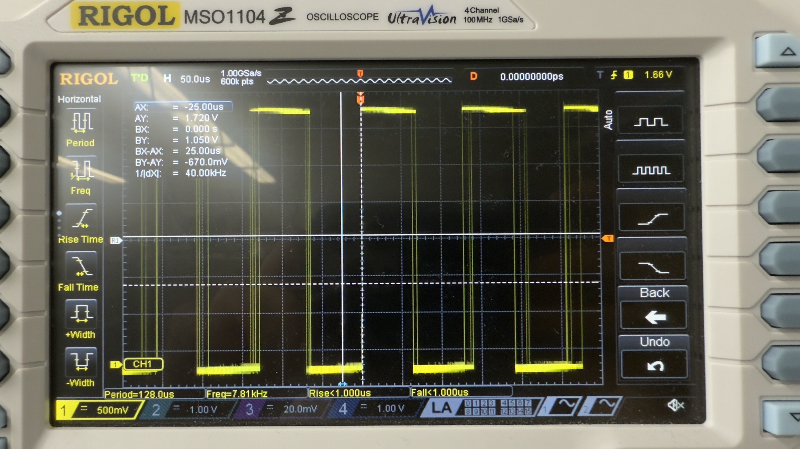

Lab 5: Interrupts
Introduction
The goal of this design is to practice implementing interrupts by measuring the rotational speed of a motor with a MCU.
Design
For this lab, the motor being tested, with a known 408 pulses per revolution (PPR), is connected to a quadrature encoders whose two ports, encoder A and encoder B, have a 90 degree out of phase. By counting both the rising and falling edges of both encoder A and B, each pulse is equivalent to 4 trigger events, and thus the rotational speed, in rev/s, can be given by: \[ V_{rot} = \frac{count_{trigger}}{4*408} \]
I used libraries provided by the course for setting up most of the MCU. However, I reused the timer functions which I created in lab 4, since I was more familiar with its prescalar calculations. Referencing the STM32L432KC reference manual, programming manual, and datasheet, I was able to utilize functions to set up and enable the interrupts. Specifically, PA9 for encoder A and PA10 for encoder B was chosen as they were 5V compatible.
To enable the interrupts and correctly handle them, I wrote the functions EXTI9_5_IRQHandler and EXTI15_10_IRQHandler, respectively for PA9 and PA10. The handlers should update (increase or decrease) the count of triggers and determine the direction of the rotation. From observation, it can be seen that which ever encoder came first for each rotating direction has high on rising edge and low on falling, whereas the other encoder is a low and high, respectively. On the other hand, which ever came the later for each rotating direction had both encoders on high or low when there is an edge. Using such logic, we can find the direction which the motor is spinning by reading the input pins when interrupts happen. The flow chart for the interrupt design is described in the following picture:

Then, for every 1 second delay, the device prints the rotation speed and direction which the motor is spinning.
The circuitry design was referenced from the motor datasheet attached above, and no additional components were connected. The schematics for the physical circuit design is shown in the following graph:

Testing and Results
When 10.02V is supplied to the motor, the output of one of its encoder has a frequency of 954 Hz, as shown in the following oscilloscope trace:
Given that the PPR is 408, its rotational speed should be: \[ \omega_{10.02V} = \frac{954 \ Hz}{408 \ rev^{-1}} \approx 2.338 \ rev/s \]
The motor speed outputted by my device was 2.361 rev/s, which is close to the calculated result, and the rotational direction was confirmed to be correct through visual observation. When the motor is turned off, the outputted motor speed is then 0. At both high and low speed, the device showed a steady output of reasonable motor speed.
To compare the performaces between interrupts and manual polling, I disabled the interrupt and toggled a pin for when each loop of my while loop is being ran, providing the motor a voltage of 10.02 V. The output is shown in the graph below:

The toggled pin had a frequency of 7.81 kHz. The maximum motor speed which it should be able to detect is thus: \[ \omega_{max, pol} = \frac{7.81 * 10^3 \ Hz}{408 \ rev^{-1}} \approx 19.14 \ rev/s \]
This made sense since when I tried to gate and use polling, the device also outputted correct motor speed even up until 4 rev/s. As for the interrupt, using a function generator, I found that the device can no longer output the correct frequency which it was receiving at around 13 kHz. Therefore, the maximum motor speed it should be able to detect is: \[ \omega_{max, int} = \frac{13 * 10^3 \ Hz}{408 \ rev^{-1}} \approx 31.86 \ rev/s \]
The interrupt would thus work better at a high speed.
Conclusion
In this lab, I successfully designed and built a MCU design that was able to correctly measure the motor speed and rotational direction. As mentioned in previous sections, the motor speed are close to theoretical values and was steady throughout operations. Therefore, I believe that my design for this lab meets all the requirements of this lab. This week, I spent 8 hours on the lab. One issue that I spent the most time debugging was my hardware, which I believe had some soldering issues. When the MCU is connected with the ribbon cable, I was unable to read to the pins. However, when I directly wire the circuit to the MCU on a breadboard, my device worked fine.
AI Prototype Summary
For this AI prototype, I used ChatGPT. When feeding it the prompt initially, it was completely unable to run as it was using the wrong syntax, such as GPIO_InitStruct.Pin = GPIO_PIN_0 | GPIO_PIN_1; or HAL_NVIC_EnableIRQ(EXTI0_IRQn);. After providing it the link to the header file of the device, however, it was able to generate correct syntax by using bit masking. At this point, the general logic of enabling and handling the interrupt seemed fine, but as it was not specified in the prompt, the code was missing parts that would calculate and output the motor speed. Interestingly, after asking for calculating and outputting the motor speed, ChatGPT once again generated new code with the wrong syntax, similar to those before the header file was provided. Therefore, although I do think that ChatGPT provides a reasonable place to start, for example how to enable the interrupts, it lacks more of integrating the system and outputting at our desired times.